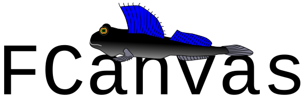

FCanvas 1.3.1 API
What is FCanvas?

FCanvas is a lightweight, easy-to-use Java library for drawing and animating simple graphic objects. It assumes no knowledge of Java, graphical user interfaces, or computer graphics beyond calling static Java methods. Ultimately, it is an encapsulation of the Java 2D API using the class de.thm.mni.oop.fcanvas.FCanvas as the only user interface.
The library was developed to enable students to quickly solve graphical sample tasks and even program small games themselves while learning the programming language Java. It offers an extremely simple interface while preserving as much performance and reactivity as possible.
Embed in Eclipse
You can integrate a JAR file as a library in Eclipse in various ways: in the entire workspace as part of the system library or only in a single project.
In a single project
To include FCanvas in a single project in Eclipse, right-click on the project and then select Properties → Java Build Path → Libraries → Add external JARs.. In the selection dialog there, you must now specify the path to the FCanvas JAR file and confirm the selection.
Throughout the workspace
Embedding for the entire workspace is a little more complicated. Eclipse allows additional JAR files to be added to a system library. To do this, click on Window → Preferences → Java → Installed JREs in the Eclipse main menu. Your Java 8 JDK should be there and marked with a check mark as default. Click on this JDK and select the Edit… button from the right-hand menu in order to specify the FCanvas JAR file again under Add external JARs… in the dialog window that appears.
From now on you can use FCanvas in all projects.
Search documentation and source files
The FCanvas library JAR file also contains the source files. This not only allows you to read through the Javadoc comments by hovering over the relevant function call like the Java API, or enter FCanvas. and go through the displayed selection list for code completion, but also to jump to the source code of the respective function at any time by pressing the F3 key. This way you can see exactly how the library is implemented in detail if you are interested.
Drawing
FCanvas works with a single graphics window that can be displayed using the FCanvas.show() method. Simple graphic elements, which are listed below, can be drawn on this window.
As is usual in computer graphics, the coordinate system of this window starts with the point (0,0) at the upper left corner of the window. The size of the canvas can be set with the method FCanvas.setCanvasSize(int,int).
Graphic elements
Rectangle
One of the simplest graphic elements is the rectangle. The following code example draws a 100 pixel wide and 200 pixel high rectangle with a black border and transparent fill whose upper left corner is 10 pixels from the top and 30 pixels from the left border.
FCanvas.drawRectangle(30,10,100,200);
FCanvas.show();The color, line size, filling and other properties of a rectangle can of course also be changed. How this works is described in the Modifications section.
Oval
Ovals can be drawn in the same way as rectangles, except that the upper left corner is the corner of the bounding box - i.e. the enclosing rectangle. The easiest way to explain the effect is with the following code example:
FCanvas.drawRectangle(20,10,100,75);
FCanvas.drawOval(20,10,100,75);
FCanvas.show();line
Lines are defined by a start and end point. The following example draws a black line from point (100,200) to point (300,400):
FCanvas.drawLine(100,200,300,400);
FCanvas.show();Text
A text can also be written at any position. The upper point on the left is not specified, but the anchor point lies on the baseline of the text. The easiest way to demonstrate the concept of baseline is with an example:
FCanvas.drawLine(100,100,300,100);
FCanvas.drawText("Alpaca",100,100);
FCanvas.show();Polygon
The polygon is the only more complicated graphic element of FCanvas. It consists of a series of points p1, p2, …, pn. Lines are drawn from p1 to p2, p2 to p3, and so on up to the last line from pn to p1 that completes the shape. The points are passed as two arrays where the first array contains the x-coordinates of the points and the second array contains the y-coordinates.
The following example draws a simple four-pointed star:
int[] x = {100,110,150,110,100, 90, 50,90};
int[] y = { 50, 90,100,110,150,110,100,90};
FCanvas.drawPolygon(x,y);
FCanvas.show();Modifications
All elements from the Graphic elements section can of course also be further modified.
The following table shows which functions are available for changing element properties and which elements they affect:
| Function | Property | Rectangle | Oval | Polygon | Line | Text |
|---|---|---|---|---|---|---|
setStrokeWidth |
Stroke width in pixels | ✓ | ✓ | ✓ | ✓ | |
setStrokeColor |
Stroke color in RGB(A) | ✓ | ✓ | ✓ | ✓ | ✓ |
setFillColor |
Fill color in RGB(A) | ✓ | ✓ | ✓ | ||
setRotation |
Rotation in degrees | ✓ | ✓ | ✓ | ✓ | ✓ |
move |
Position as point (x,y) | ✓ | ✓ | ✓ | ✓ | ✓ |
setFontSize |
Font size | ✓ |
In order to be able to identify individual elements, each drawX method returns an ID of type long. All modification methods expect such an ID as a parameter.
The following example shows how to draw a rectangle rotated 45 degrees with a red semi-transparent fill:
long id = FCanvas.drawRectangle(100,100,50,50);
FCanvas.setFillColor(id,255,0,0,128);
FCanvas.setRotation(id,45);
FCanvas.show();Animations
Draw in steps
In order to realize animations, the execution of individual drawing commands must be delayed. In Java there is the method Thread.sleep(long) with which you can put the current process to sleep for a period of time measured in milliseconds. Because this method can throw an InterruptedException, it needs to be wrapped in a try-catch block like in the following example:
FCanvas.show();
long id = FCanvas.drawOval(10,10,20,20);
//wait half a second
try {Thread.sleep(500);} catch (Exception e) {}
//then fill the circle with blue color
FCanvas.setFillColor(id,0,0,255);If you’re new to exceptions in Java, don’t get confused. You can simply copy the line that calls Thread.sleep and use it exactly as it is in your code. You only have to enter the number of milliseconds you want to wait for your animation instead of the 500 of course.
It is also important to note that the call to FCanvas.show() must of course always appear as the first line in an animation. Before this call, the window is not displayed and the animation only runs in the background.
Animation loop
If you are already in the process of programming graphic animations, you usually want to have a smooth picture progression instead of just a few jerky pictures lined up one after the other. To do this, it makes sense to use a loop that can process enough frames per second to create the impression of fluid movement. About 30 frames per second are sufficient for this, i.e. a waiting time of 1000/30 ≅ 33 milliseconds.
This animation loop can then either run until the animation is over or until the window is closed. In the latter case, you can use the FCanvas.isVisible() query as a condition in your while loop.
The following piece of code shows exactly this behavior using the example of a yellow ball circling around a point.
FCanvas.show();
long id = FCanvas.drawOval(10, 10, 50, 50);
FCanvas.setFillColor(id, 255, 255, 0);
FCanvas.setStrokeColor(id, 0, 0, 0, 0);
int t = 0;
while(FCanvas.isVisible()) {
int x = (int)Math.round(100*Math.sin(Math.toRadians(t)));
int y = (int)Math.round(100*Math.cos(Math.toRadians(t)));
FCanvas.move(id, 200+x, 200+y);
t = (t+3)% 360;
try {Thread.sleep(33);} catch (Exception e) {}
}Interactive animations
Now that we have mastered the ability to display fluid movements, the only thing missing for a first small game is the interaction with the user. Of course, this can be easily implemented with JOptionPane via dialog windows, but who wants to click away a dialog every time before he can do anything in a game? FCanvas therefore also offers the possibility to react to input via mouse and keyboard.
As a small disclaimer, it should be noted at the outset that these input queries cannot be implemented completely precisely due to the simple structure of FCanvas. So don’t expect to get completely clean game controls that never miss an input and respond within a few milliseconds. To do this, they would have to use the underlying functionality of the Swing toolkit directly.
Single clicks and key presses
Query of the shape “Has the X key been pressed in the last Y milliseconds?” can be realized with the functions FCanvas.wasKeyPressed or FCanvas.wasMouseButtonPressed. The definitions of the number codes for the individual keys can be found in the classes java.awt.event.KeyEvent and java.awt.event.MouseEvent.
Both of the above methods require an explicit specification of how many milliseconds you want to look into the past. Of course it is difficult to choose the right value here. If the time span is too short, you may miss a click. However, if the period of time is too long, it can happen that a single click is counted several times.
In the following example, exactly the same value is used as the waiting time that is also passed to Thread.sleep to color a circle red or blue when the arrow key is pressed to the left or to the right.
FCanvas.show();
long id = FCanvas.drawOval(10, 10, 50, 50);
while(FCanvas.isVisible()) {
if (FCanvas.wasKeyPressed(KeyEvent.VK_LEFT, 30)) {
FCanvas.setFillColor(id, 255, 0, 0);
} else if (FCanvas.wasKeyPressed(KeyEvent.VK_RIGHT, 30)) {
FCanvas.setFillColor(id, 0, 0, 255);
}
try {Thread.sleep(30);} catch (Exception e) {}
}If you run this code, you’ll notice that sometimes you have to press a key multiple times before the color changes. This is because in addition to the 30 milliseconds, there are also a few milliseconds for the execution of the actual animation loop.
To get around this problem, there are methods FCanvas.getKeyPressesSinceLastAsked or FCanvas. getMouseButtonPressesSinceLastAsked. As the name suggests, these methods count the keystrokes since the last query. With the very first call, of course, all keystrokes since the start of the program are counted.
The same example would then look like this:
FCanvas.show();
long id = FCanvas.drawOval(10, 10, 50, 50);
while(FCanvas.isVisible()) {
if (FCanvas.getKeyPressesSinceLastAsked(KeyEvent.VK_LEFT) > 0) {
FCanvas.setFillColor(id, 255, 0, 0);
} else if (FCanvas.getKeyPressesSinceLastAsked(KeyEvent.VK_RIGHT) > 0) {
FCanvas.setFillColor(id, 0, 0, 255);
}
try {Thread.sleep(30);} catch (Exception e) {}
}Hold key pressed down
If it should also be possible to hold down a key for a prolonged duration, there are also the methods FCanvas.isKeyDown or FCanvas.isMouseButtonDown. These indicate the state of the button (pressed or not pressed) at the current time of the query.
The example below shows a circle that can be moved left or right by holding down the arrow keys.
FCanvas.show();
int x = 300;
int y = 300;
long id = FCanvas.drawOval(x, y, 50, 50);
while(FCanvas.isVisible()) {
if (FCanvas.isKeyDown(KeyEvent.VK_LEFT)) {
x -= 3;
} else if (FCanvas.isKeyDown(KeyEvent.VK_RIGHT)) {
x += 3;
}
FCanvas.move(id,x,y);
try {Thread.sleep(30);} catch (Exception e) {}
}Mouse position
Of course, the mouse position can also be queried with the methods FCanvas. getLastMouseX and FCanvas.getLastMouseY. The following example implements a circle that follows the mouse.
FCanvas.show();
int x = 300;
int y = 300;
long id = FCanvas.drawOval(x, y, 50, 50);
while(FCanvas.isVisible()) {
x = FCanvas.getLastMouseX()-25;
y = FCanvas.getLastMouseY()-25;
FCanvas.move(id,x,y);
try {Thread.sleep(30);} catch (Exception e) {}
}Others
This section covers any other special features of FCanvas that don’t fit into any of the other sections.
Concealments
When two graphic elements overlap, the element created later overlays the one created first. This order cannot be changed. Should it ever be absolutely necessary, you can simply delete the element that should move up with FCanvas.remove and then create it again.
Performance and update behavior
FCanvas normally redraws the entire image each time a drawing method is called. If you want to program an animation with very small time steps, it can make sense to switch off these automatic updates with the method FCanvas.setAutoUpdate. You then have to do the drawing manually using the FCanvas.update method.
Canvas Width/Height
You can access the size of the canvas (window size without the border) with the FCanvas.getCanvasWidth or FCanvas.getCanvasHeight methods. You can also set the canvas size from code using the FCanvas.setCanvasSize method.
Save as image file
Since version 1.3 you can save the contents of the canvas window as an image file using the FCanvas.saveToImage method.